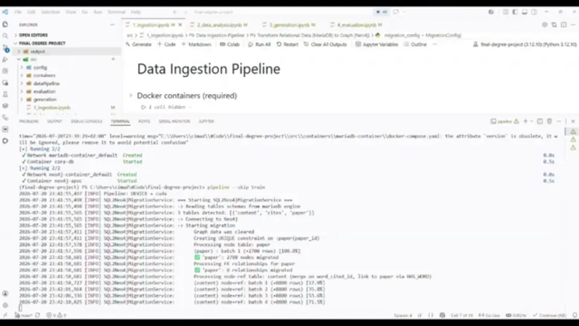

Final degree project — Synthetic Knowledge Graphs
From relational databases to synthetic knowledge graphs: generating synthetic semantic data with Graph Machine Learning. Grade: 10/10, nominated for distinction (matrícula de honor).
Repository of the final degree project · Docs of the final degree project · Demo of the final degree project on YouTube